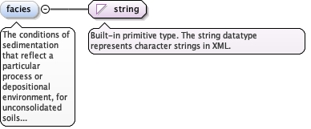
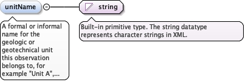

The classification system that applies to this observation. Use itto override the default of the enclosing diggs:LithologySystem forthis interval, or, where the system declares more than one default,to say which of them applies. Omit it and the observation takes thedefault of the system. A typical case is a soil column classifiedvisually throughout (ASTM D2488) in which a few sampled intervalsare classified from laboratory tests (ASTM D2487). It may alsorecord that no soil classification system applies, for material thatis not soil or not naturally deposited. No DIGGS-authored dictionarycurrently exists for this element.
<element minOccurs="0" name="lithologyClassificationType" type="gml:CodeType"><annotation><documentation>The classification system that applies to this observation. Use it to override the default of the enclosing diggs:LithologySystem for this interval, or, where the system declares more than one default, to say which of them applies. Omit it and the observation takes the default of the system. A typical case is a soil column classified visually throughout (ASTM D2488) in which a few sampled intervals are classified from laboratory tests (ASTM D2487). It may also record that no soil classification system applies, for material that is not soil or not naturally deposited. No DIGGS-authored dictionary currently exists for this element.</documentation></annotation></element>
<element name="primaryLithology" type="diggs:LithologyPropertyType"><annotation><documentation>The lithology that makes up the principal portion of the observed zone or sample.</documentation></annotation></element>
A lithology that makes up a subsidiary portion of the observed zoneor sample. Use it where the lithology is distinct from the primarylithology, for example interbedded or occurring in inclusions or inpart of the zone, and in soil descriptions where components such assand, gravel and fines are recorded in detail (silty sand withgravel) and a constituent is not sufficient. Repeat for eachcomponent.
<element minOccurs="0" name="componentLithology" type="diggs:ComponentLithologyPropertyType" maxOccurs="unbounded"><annotation><documentation>A lithology that makes up a subsidiary portion of the observed zone or sample. Use it where the lithology is distinct from the primary lithology, for example interbedded or occurring in inclusions or in part of the zone, and in soil descriptions where components such as sand, gravel and fines are recorded in detail (silty sand with gravel) and a constituent is not sufficient. Repeat for each component.</documentation></annotation></element>
The conditions of sedimentation that reflect a particular process ordepositional environment, for unconsolidated soils or sedimentaryrocks, for example alluvium, dune sand, river terrace deposits orhemipelagic sediment; for metamorphic rocks, a set of mineralassemblages formed under similar pressures and temperatures, forexample zeolite facies or blueschist facies. Facies terms imply noorder in a stratigraphic column; report informal units that occur instratigraphic order in a diggs:StratigraphySystem.
Diagram

Type
string
Properties
content
simple
minOccurs
0
Source
<element minOccurs="0" name="facies" type="string"><annotation><documentation>The conditions of sedimentation that reflect a particular process or depositional environment, for unconsolidated soils or sedimentary rocks, for example alluvium, dune sand, river terrace deposits or hemipelagic sediment; for metamorphic rocks, a set of mineral assemblages formed under similar pressures and temperatures, for example zeolite facies or blueschist facies. Facies terms imply no order in a stratigraphic column; report informal units that occur in stratigraphic order in a diggs:StratigraphySystem.</documentation></annotation></element>
A formal or informal name for the geologic or geotechnical unit thisobservation belongs to, for example "Unit A", "Merrit Sand" or "BayMud". Use it where no diggs:StratigraphySystem ordiggs:GeoUnitSystem names the unit.
Diagram

Type
string
Properties
content
simple
minOccurs
0
Source
<element minOccurs="0" name="unitName" type="string"><annotation><documentation>A formal or informal name for the geologic or geotechnical unit this observation belongs to, for example "Unit A", "Merrit Sand" or "Bay Mud". Use it where no diggs:StratigraphySystem or diggs:GeoUnitSystem names the unit.</documentation></annotation></element>
Database handle for the object. It is of XML type ID, so is constrained to beunique in the XML document within which it occurs. An external identifier for the object inthe form of a URI may be constructed using standard XML and XPointer methods. This is doneby concatenating the URI for the document, a fragment separator, and the value of the idattribute.
A legacy attribute for AGS trial pit sampling features, whereobservations of different strata can occur at the same depth in a pit: areference letter or number whose sole purpose is to link the stratum onthe face sketch of the trial pit to the observation.
Source
<complexType name="LithologyObservationType"><complexContent><extension base="diggs:AbstractObservationType"><sequence><element minOccurs="0" name="lithologyClassificationType" type="gml:CodeType"><annotation><documentation>The classification system that applies to this observation. Use it to override the default of the enclosing diggs:LithologySystem for this interval, or, where the system declares more than one default, to say which of them applies. Omit it and the observation takes the default of the system. A typical case is a soil column classified visually throughout (ASTM D2488) in which a few sampled intervals are classified from laboratory tests (ASTM D2487). It may also record that no soil classification system applies, for material that is not soil or not naturally deposited. No DIGGS-authored dictionary currently exists for this element.</documentation></annotation></element><element name="primaryLithology" type="diggs:LithologyPropertyType"><annotation><documentation>The lithology that makes up the principal portion of the observed zone or sample.</documentation></annotation></element><element minOccurs="0" name="componentLithology" type="diggs:ComponentLithologyPropertyType" maxOccurs="unbounded"><annotation><documentation>A lithology that makes up a subsidiary portion of the observed zone or sample. Use it where the lithology is distinct from the primary lithology, for example interbedded or occurring in inclusions or in part of the zone, and in soil descriptions where components such as sand, gravel and fines are recorded in detail (silty sand with gravel) and a constituent is not sufficient. Repeat for each component.</documentation></annotation></element><element minOccurs="0" name="facies" type="string"><annotation><documentation>The conditions of sedimentation that reflect a particular process or depositional environment, for unconsolidated soils or sedimentary rocks, for example alluvium, dune sand, river terrace deposits or hemipelagic sediment; for metamorphic rocks, a set of mineral assemblages formed under similar pressures and temperatures, for example zeolite facies or blueschist facies. Facies terms imply no order in a stratigraphic column; report informal units that occur in stratigraphic order in a diggs:StratigraphySystem.</documentation></annotation></element><element minOccurs="0" name="unitName" type="string"><annotation><documentation>A formal or informal name for the geologic or geotechnical unit this observation belongs to, for example "Unit A", "Merrit Sand" or "Bay Mud". Use it where no diggs:StratigraphySystem or diggs:GeoUnitSystem names the unit.</documentation></annotation></element><element maxOccurs="unbounded" minOccurs="0" ref="diggs:placedObservation"/><element minOccurs="0" ref="diggs:baseBoundary" maxOccurs="unbounded"/></sequence></extension></complexContent></complexType>